Aseprite treats a palette as a strip of pixels you paint at the bottom of the editor. Spaghetti treats it as its own type: a list of colours that travels on a wire, gets read, sorted, combined and applied like any other value in the graph. The Palette folder has three shelves. Source is where a list comes from (the sprite, a file, a preset, or one you type in yourself). Build is what turns one list into another, or a colour into a whole scheme. Apply is what a palette does once it meets an image: quantizing, recolouring, mapping, cycling.
The shelf order is also a workflow order: pull a palette in or type one, shape it on Build, then drop it on Apply where the pixels are. Most of these nodes read a Palette port and fall back to the sprite's own colours when nothing is wired, so Match Palette or Bit Reduce work on a fresh graph with zero setup.
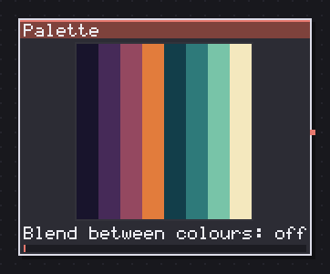
Brings the sprite palette in as a color strip, in hard steps.
This is the node that reads a real palette instead of drawing one from scratch. Source picks where from: Current is the sprite open in the editor, File loads a .pal/.gpl/.ase off disk, and Preset gives you twelve hardware palettes baked into the product (NES, Game Boy, Commodore 64, both CGA modes, EGA, ZX Spectrum, MSX, Apple II, Master System, PICO-8). Pick Preset and a credit line for the machine shows up under the combo.
From and To cut a range out of the list before anything downstream sees it (0 on either side means the open end), which is how you pull only the greys out of an NES palette or skip the transparent slot some formats put first. Reverse flips the list itself now, not only the picture of it, so a ramp you built dark to light comes out light to dark and stays a real ramp for the next node. Blend between colours only changes how this node's own strip looks when you preview it; every other node reads the hard list of entries.
In: nothing · Out: palette
Parameters
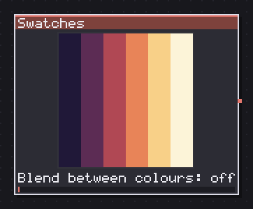
Holds a list of colours typed into the graph and edited in a window.
The palette the graph owns outright. Every other Source node borrows a list from somewhere else (the sprite, a file, a machine); this one keeps its colours in params.colors, so they save with the .sgp and open the same way on a different sprite or a different computer. There is no combo, no path, no slider that matters: the whole node is a button that opens an editor window where you add, remove and repaint entries by hand.
I reach for this when a graph needs a specific, opinionated palette that has nothing to do with the sprite it happens to be open next to: a UI panel's colour set, a fixed ramp for a recurring effect, a reference scheme copied from a mood board. It starts at two colours, black and white, because a one-colour palette cannot show what the type even is.
Blend between colours is the only parameter and it works the same way it does on the Palette node: it smooths the preview strip, it does not touch what downstream nodes read. Wire it into Palette Adjust or Palette Sort and edit it in place instead of retyping colours every time you want a variant.
In: nothing · Out: palette
Parameters
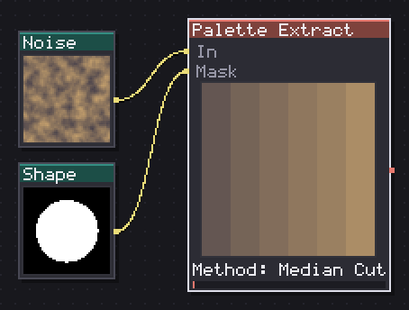
Reads the colours of an image into a palette by median cut, k-means or plain uniques.
Turns a picture into a palette instead of a palette into a picture, which is the other half of the workflow Palette Sheet and Palette node cover. Method picks the algorithm: Median Cut is the fast, deterministic default (Heckbert's 1982 split of the colour cube), K-Means seeds from the same cut and then relaxes toward the colours that actually cover the most area, and Unique does not quantize at all, it hands back exactly the colours that are there, in the order they first appear. Unique is what you want on art that was already painted in an indexed palette; the other two are for photos, renders, or anything with more colours than a sprite can afford.
Colours sets how many entries Median Cut or K-Means aim for (2 to 256; Unique ignores it, its count is whatever the source has). Sort orders the result afterward: Frequency is the one only this node can offer, since it is the only node that knows how many pixels each colour covered. Alpha min (default 8) is the cutoff below which a pixel is treated as empty rather than as a colour to count, so a soft-edged sprite does not fill your new palette with near-invisible fringe pixels.
In: In (image), Mask (image) · Out: palette
Parameters
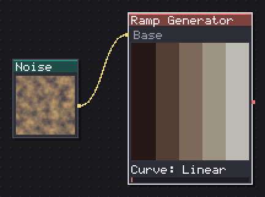
Turns a base color into a ramp of N tones with a hue shift.
A ramp out of one colour, which is different from a whole palette out of one colour: this node spreads lightness either side of the base you picked, Palette Builder below spreads it across a fixed low-to-high range instead. Steps (2-16) is the ramp length, and Spread % is how far it reaches from the base's own lightness, so a low spread keeps a tight cluster of near-identical tones and a high one runs closer to black and white.
Hue dark and Hue light turn the hue as you go darker or lighter, which is the pixel-art habit of cooling shadows and warming highlights; the matching Sat dark/Sat light pair does the same to saturation, and the defaults already lean that way (-20/20 hue, 10/-10 saturation). Curve switches between Linear, evenly spaced steps, and Ease, which stays shallow near the base colour and steepens toward the two ends, useful when you want the midtones to hold together and the extremes to do the work.
Wire a Solid, a Swatch or a photo into Base and it overrides the colour knob entirely, reading the centre pixel of whatever arrives.
In: Base (image) · Out: palette
Parameters
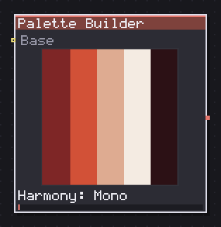
Builds a whole palette from one colour: N hues by M shades, with the hue shift.
The generator Lospec and Coolors put on the web, built into the graph. One base colour becomes a whole palette of Hues by Shades per hue, following a colour-wheel Harmony: Mono is one hue, Complementary adds its opposite, Analogous adds its two neighbours, Triadic and Tetradic space three or four hues evenly, Split pairs the base with the two neighbours of its complement, and Custom opens Hues and Hue spread to hand-place any number of them.
A fresh node reads as a ramp of pure greys, because pure white has no saturation for the hue knobs to turn yet; pick a base colour in the swatch and the harmony wakes up. Value min/Value max set the lightness range every ramp covers (12 to 92 by default, so nothing bottoms out at pure black or blows to pure white), and Hue dark/Hue light plus Sat falloff apply the same shadows-cool, highlights-warm curve Ramp Generator uses, but across the whole built palette rather than one ramp. Grey ramp appends a neutral spine with no hue at all, which is what you want under a build meant to carry both saturated and desaturated art. Sort picks whether the output stays grouped as ramps or gets flattened by luma.
In: Base (image) · Out: palette
Parameters
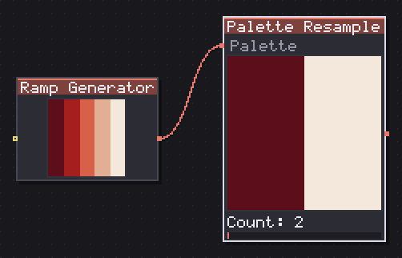
Resamples a palette to N colours, snaps to the ones it has, or drops the duplicates.
Changes how many entries a palette has, in three different ways that answer three different questions. Method Even reads the list as a continuous ramp and mixes new colours at N equal steps, which is what you want when a palette really is a gradient and you need it shorter or longer. Snap picks N entries that were already there, nearest to those same steps, so it never invents a colour, the one to use on a hand-picked palette you don't want blended. Dedupe doesn't touch length at all: it drops any entry within Tolerance of one it already kept, which at tolerance 0 means exact duplicates only.
Count (2-256, hidden under Dedupe since that mode doesn't take one) is the target length for Even and Snap. From/To cut the source range first, and Reverse flips the result last. I use Even to turn a five-stop extracted ramp into three for a tighter print, and Snap to shrink a hand-picked sixteen-colour set down to eight without the mixing washing out the artist's choices.
In: Palette (palette) · Out: palette
Parameters
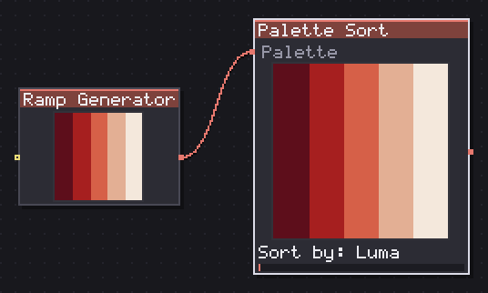
Orders a palette by luma, hue or saturation, or into the ramps an artist would leave.
Puts a palette in an order, and the order is data other nodes can read: Palette Cycle rotates through it, Palette Sheet draws it in it. Sort by Luma is Rec. 601 brightness, the whole engine's usual measure; Lightness is HSL's L, which is not the same axis (a saturated yellow and a saturated blue can share a lightness while sitting stops apart in luma). Hue sorts round the wheel with greys kept up front, since a grey has no hue to place. Saturation runs grey to pure. Reverse isn't a sort at all, it's only where a user goes looking for one, so it lives in this combo rather than forcing a second node.
Ramps is the one that matters most in practice: it buckets colours by hue (bucket width set by Hue step, only shown in this mode) and orders each bucket dark to light, which is what an artist actually means by "this palette is tidy." It's the sort to run right after Palette Extract, before you look at what you got.
In: Palette (palette) · Out: palette
Parameters
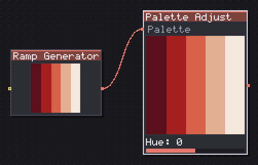
Shifts hue, saturation, lightness, contrast and gamma of every entry of a palette.
Moves every entry of a palette in HSL, one by one, without merging or reordering anything: two entries that were the same colour are still two entries afterward. It exists because the alternative, drawing the palette as a strip, running a filter over the pixels and reading the strip back, loses colours the moment the strip is narrower than the palette is long.
Hue, Saturation and Lightness are plain offsets. Contrast pivots on the palette's own mean luma rather than a fixed midpoint, so it stays useful on a palette that already skews dark or light. Hue dark/Hue light repeat the shadows-cool, highlights-warm split Ramp Generator and Palette Builder use, but applied after the fact to a palette you already built some other way. Gamma (default 100, meaning off) reshapes each channel independently.
Every knob sits at an identity default, and the node is written so that identity is exact, not merely close: with nothing touched it skips the HSL round trip entirely rather than running it with zeroes, because RGB to HSL and back loses precision even at zero offset. I use this to key a whole scene's palette from day to night on Light and Hue together, keyframed on the timeline.
In: Palette (palette) · Out: palette
Parameters
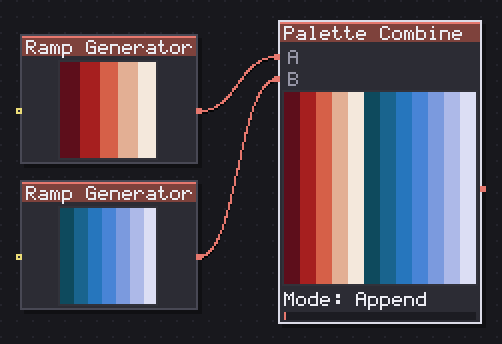
Joins two palettes end to end or in turn, or keeps what they share or do not.
Joins two palettes end to end, or takes what they share or don't. Mode Append is A then B, plain concatenation, and the only mode that can overflow the 256-colour cap (a warning label shows up on screen in exactly the two modes where that matters). Interleave zips them, A1 B1 A2 B2, with the longer list finishing on its own once the shorter runs out. Intersect keeps only A's entries that B also has, within Tolerance; Subtract keeps only the ones B doesn't have. Both of the last two answer in A's own order and keep A's duplicates, because in this category order is data and nothing gets removed unless you ask.
Drop duplicates runs last, after whichever mode already ran, and it means the same thing in every mode: no two entries closer than Tolerance survive. On Append that gives you the union people expect from a Combine node; on Interleave it strips the tones the two ramps already had in common. I use Subtract to find what a new palette adds over an old one before I merge them by hand.
In: A (palette), B (palette) · Out: palette
Parameters
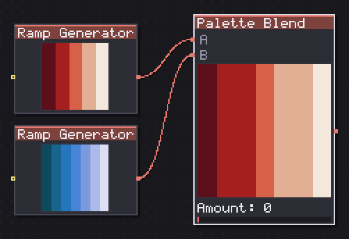
Crossfades one palette into another by index or by nearest colour.
A crossfade between two palettes, driven by one number. Amount (0-100) is exactly what a mixer knob should be: at 0 the output is A, at 100 it's what Match chose from B, and because it is an ordinary parameter you can key it on the timeline and walk a whole scene's colours from a day palette to a night one over as many frames as you like.
Match By Index pairs entry i of A with entry i of B; when the two lists differ in length the shorter one is stretched by sampling rather than blended a second time, so nothing important gets skipped. Nearest instead pairs every entry of A with whichever colour in B is perceptually closest, using the same weighted distance the rest of the engine measures with, which is the mode to use when A and B were not built to line up index for index.
Unlike Palette Adjust this node has no identity to protect at its defaults; a fresh Palette Blend is already halfway between its two inputs, because a mixer that looks broken until you touch it is worse than one that shows a mix from the moment you drop it.
In: A (palette), B (palette) · Out: palette
Parameters
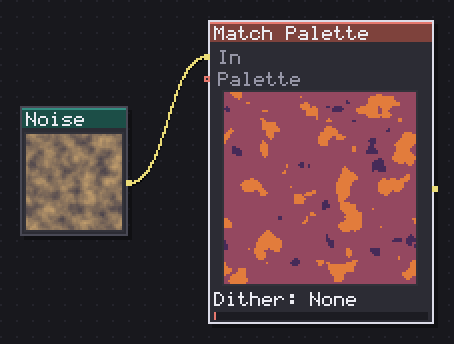
Maps the input onto the sprite palette colors, with dithering.
Snaps every pixel of an image onto the nearest colour of a palette, which is the node that actually turns a graph's output back into something a game console or a strict pixel-art style could display. Wire a Palette in and that list is used exactly as its own node cut it; leave it unwired and the node reads the sprite's own palette instead, cut by From/To the same way the Palette node's own range works.
Dither adds an ordered offset before matching so a smooth gradient keeps its shape instead of banding hard: Bayer 2x2 and Bayer 4x4 are classic ordered screens at two coarseness levels, Blue Noise spreads the same idea without a visible grid pattern. Dither amount (hidden when Dither is None) scales how far that offset pushes a pixel before it snaps, from a light touch to a full-strength scatter.
Fully transparent pixels are left alone in every mode, so this node is safe to drop right before an Export Slot without eating your alpha. I run it right after Match Palette's cousin, Bit Reduce, or after any generator that overshoots the palette a target platform can actually show.
In: In (image), Palette (palette) · Out: image
Parameters
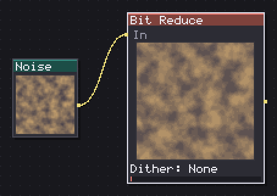
Drops the image to N colors by median cut, with optional dithering.
The legacy way to quantize an image, kept for the graphs that already use it. Colours (2-64) sets how many the median cut aims for, and the dithering options (None, Bayer 2x2, Bayer 4x4, Blue Noise, with Dither amount scaling the effect) work exactly like Match Palette's own.
Output is the one row worth reading twice: Image is the normal path, a quantized picture on the wire, and Palette hands back the strip-of-pixels reading of a palette this node used to be the only way to get. That mode is marked legacy on the row itself and points at Palette Extract, which does the same median cut but puts an actual palette typed list on the wire instead of a picture of one, so Palette Sort, Palette Adjust and the rest of the category can read it directly. Unless you're maintaining an older graph, reach for Palette Extract and quantize with Match Palette instead: same algorithm underneath, but the palette becomes a value you can keep shaping.
In: In (image) · Out: image
Parameters
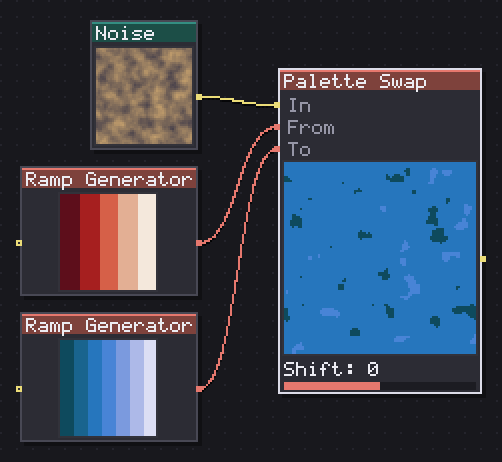
Recolors by index: a pixel found in one palette comes out as the same slot of another.
The palette swap every retro engine ships with: a pixel that is entry i of From comes back as entry i of To. It is what Color Swap cannot do, because Color Swap only knows one colour at a time and has no notion of an index to carry across a whole list, so red slime and blue slime out of one drawing is this node's job, not that one's.
Match By Index requires the pixel to actually be one of From's colours (within Tolerance, exact at the default of 0); what doesn't match is handled by Unmatched, either Keep, left alone, or Transparent, cleared out. Nearest snaps every pixel to its closest From entry first, which is the mode for art that was not drawn strictly in that palette, and neither Tolerance nor Unmatched apply since everything matches something.
Shift rotates which entry of To each From index lands on, with wrap, which is a single frame of colour cycling done by hand: sweep it and you get the animation Palette Cycle automates. If To is shorter than From the wrap makes the pattern alternate rather than flattening onto one colour, which reads as a picture instead of a smear.
In: In (image), From (palette), To (palette) · Out: image
Parameters
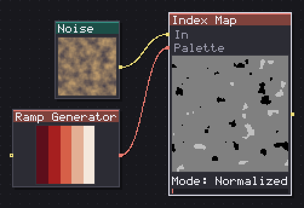
Turns every pixel into the index of its nearest palette entry, as grey or as a raw byte.
Turns a picture into coordinates instead of colours: every pixel becomes the index of its nearest entry in a palette. Mode Normalized spreads index 1..n across the full 0-255 grey range, so a two-colour palette maps to black and white rather than black and almost-black, and it's what you wire into a Gradient Map to repaint an image with an entirely different palette. Raw instead writes the index itself, counted from zero, into the red channel alone (green and blue stay at 0), which is the byte-accurate reading a shader or an export script would want.
I use this node two ways: as a bridge in a repaint pipeline (Index Map into Gradient Map with a second palette gives you a full recolour with none of the banding a direct swap would leave), and as a debugging view on its own, since looking at the raw index map is the fastest way to see where a Match Palette or a Palette Swap actually placed the cut between two nearby colours.
In: In (image), Palette (palette) · Out: image
Parameters
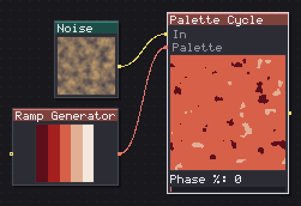
Rotates a palette ramp over N frames, cycling the colors of one drawing without moving a pixel.
Mark Ferrari's colour cycling, the trick that gets water running and lava flowing out of one static frame of art, done by rotating a ramp of indices instead of redrawing anything. From/To cut the ramp to cycle (0 on either side means the open end, so a wired art file with a fixed light source in the first few entries can be left alone). Every pixel outside that cut, or further than Tolerance allows from any entry in it, is copied through untouched in every frame; Tolerance defaults to 100, the whole colour space, because here the knob decides what belongs to the ramp at all, not what counts as identical.
Frames at 0 answers a cycle exactly as long as the ramp, so it closes on itself with no counting required; Direction Forward or Backward picks which way the ramp turns, and Ping-pong runs there and back without doubling the two end frames. Phase % is the parameter to key on the timeline: animate it 0 to 100 over however many frames you like and the ramp turns exactly once, on your own clock rather than the node's. This is the node that connects the Palette category to Animation, and it is worth building a small hand-picked ramp with Swatches specifically to cycle, rather than fishing one out of a bigger palette.
In: In (image), Palette (palette) · Out: image
Parameters
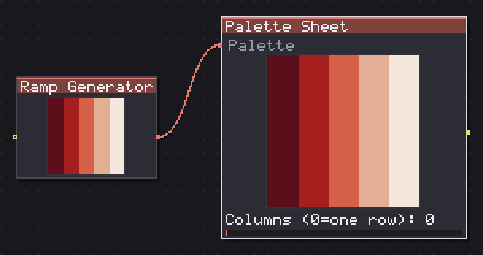
Draws a palette as swatches: one row, or a grid of N columns.
Draws a palette as a picture of itself, in one of three readings depending on Columns and Cell px. Both at zero (the default) draws the classic single-row strip, the same thing a palette used to be before this category existed, and it is the only path that honours a smooth list, since a grid of hard swatches has no way to blend between cells.
Set Cell px to a fixed size and Columns to 0 and you get one row of fixed swatches, the reading Lospec's own palette PNGs use. Give Columns a real number and the sheet reflows into a grid of that width, which is how a reference sheet for a whole project usually looks. Gap px adds space between cells, Background colours whatever shows in the gaps and around the edges, and Border draws one pixel of background around every swatch at any render size, a grid line rather than a percentage. I keep one of these wired to a project's master palette purely as a legend, dropped in the corner of a reference sheet.
In: Palette (palette) · Out: image
Parameters